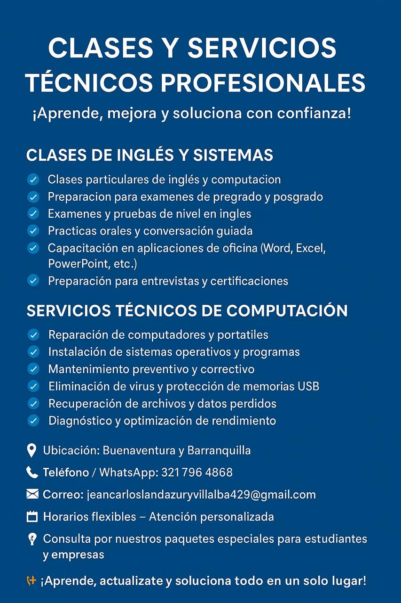
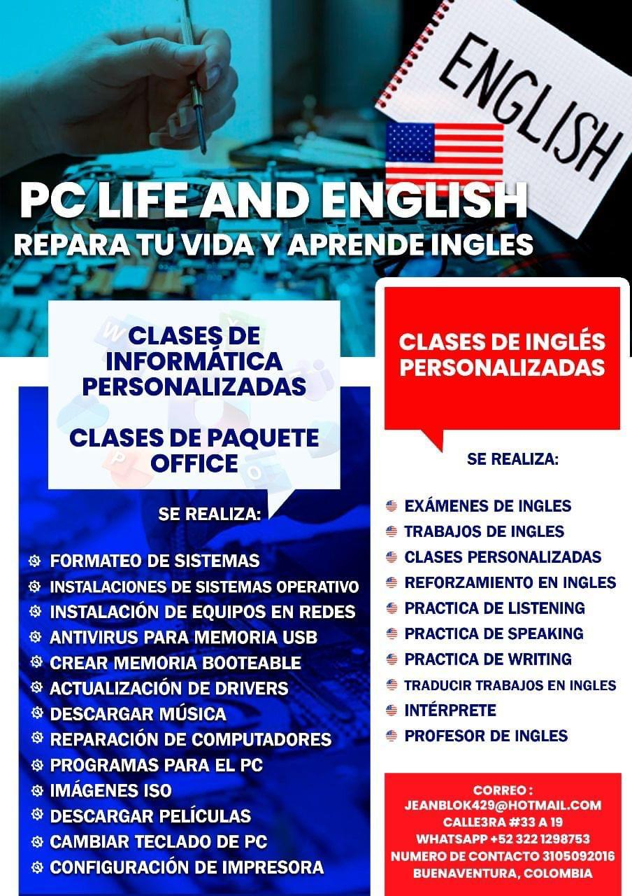

BIENVENIDOS A PC LIFE
Tecnología y Comunicación
Hardware
Comunicación
Software

Card title
This is a wider card with supporting text below as a natural lead-in to additional content. This content is a little bit longer.

Card title
This card has supporting text below as a natural lead-in to additional content.

Card title
This is a wider card with supporting text below as a natural lead-in to additional content. This card has even longer content than the first to show that equal height action.
Nuestra historia
Ofrecemos un servicio integral de reparación de computadoras (hardware/software) y capacitación en inglés técnico para entornos laborales.
Nuestros Servicios Destacados
Reparación y mantenimiento de computadoras, diagnóstico de equipos, mantenimiento preventivo, soporte técnico integral y limpieza física.
Servicio de Inglés Técnico
Entrenamiento en vocabulario técnico para bases de datos y sistemas, preparación para soporte técnico en inglés y desarrollo profesional en el sector tecnológico.